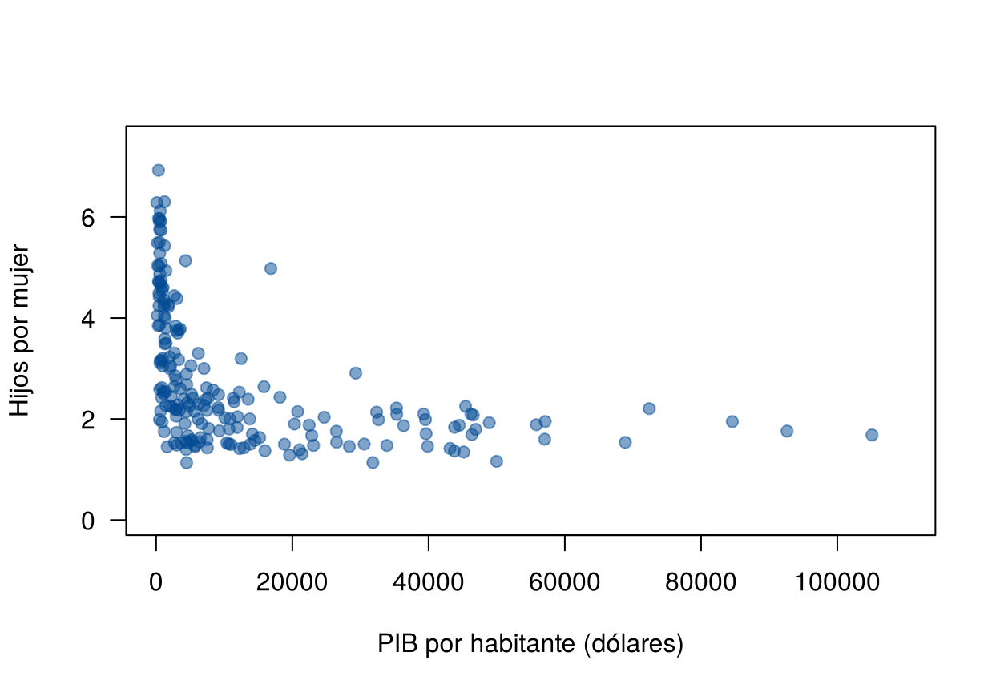
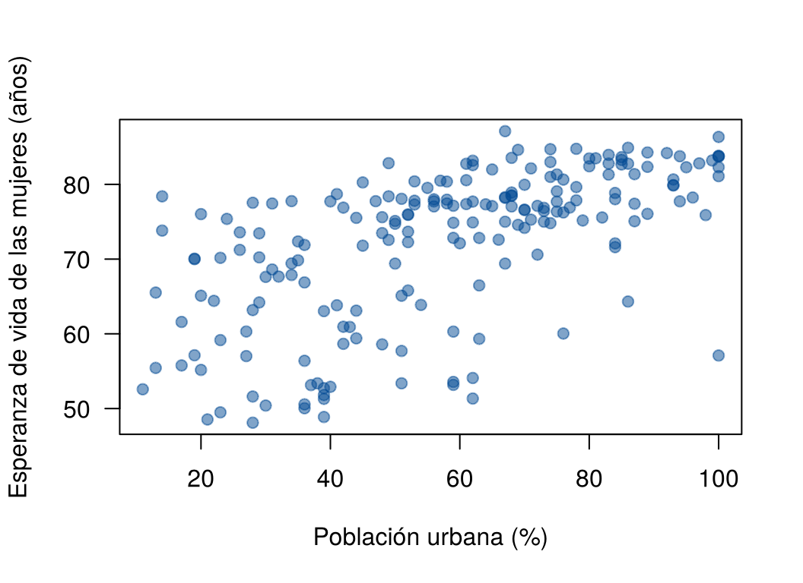

La correlación de Pearson mide relaciones lineales. Muchas relaciones reales son monótonas pero no rectas: siempre crecen (o siempre decrecen), aunque no al mismo ritmo. Por ejemplo, la fecundidad baja rápido cuando un país pasa de muy pobre a pobre, y casi no cambia entre países ricos.
Esta página presenta dos coeficientes que miden relaciones monótonas usando solo el orden de los datos: el de Spearman y el de Kendall. Los bloques de código se ejecutan en orden.
Una relación es monótona creciente si, cuando \(x\) aumenta, \(y\) tiende a aumentar, sin importar si lo hace en línea recta. Es monótona decreciente si \(y\) tiende a disminuir. Una relación que primero sube y luego baja (en forma de U invertida) no es monótona.
| Forma de la relación | Pearson | Spearman y Kendall |
|---|---|---|
| Recta | La mide bien | La miden bien |
| Curva pero monótona | La subestima | La miden bien |
| En forma de U | Cercano a 0 | Cercanos a 0 |
Ninguno de los tres coeficientes detecta una relación en forma de U. Para eso hay que graficar.
Se usan datos de las Naciones Unidas para 213 países y territorios,
entre 2009 y 2011, del paquete carData (Fox y Weisberg,
2019). La copia de la carpeta data tiene los nombres en
español:
| Variable | Qué mide |
|---|---|
pais, region |
País y región |
fertilidad |
Número esperado de hijos por mujer |
pib_pc |
Producto interno bruto por habitante, en dólares |
urbana |
Porcentaje de la población en zonas urbanas |
vida_mujer |
Esperanza de vida de las mujeres, en años |
Los datos se descargan aquí:
paises.csv. Guarde el archivo en
la carpeta data de su proyecto de
RStudio.
paises <- read.csv("data/paises.csv")
paises <- na.omit(paises) # se quitan 14 territorios sin datos
nrow(paises)[1] 199plot(fertilidad ~ pib_pc, data = paises, pch = 19, col = "#034A9480", las = 1,
xlab = "PIB por habitante (dólares)", ylab = "Hijos por mujer",
xlim = c(0, 110000), ylim = c(0, 7.5))
Fecundidad y PIB por habitante en 199 países.
La relación es decreciente pero muy curva. Pearson no la describe bien:
cor(paises$pib_pc, paises$fertilidad)[1] -0.4399891El coeficiente de Spearman, \(r_s\), es la correlación de Pearson calculada sobre los rangos de los datos: el valor más pequeño recibe el rango 1, el siguiente el 2, y así hasta \(n\). Si hay empates, cada uno recibe el promedio de los rangos que ocuparían.
Un ejemplo con cinco países:
cinco <- paises[paises$pais %in% c("Niger", "India", "Colombia", "Chile", "Norway"),
c("pais", "pib_pc", "fertilidad")]
cinco$rango_pib <- rank(cinco$pib_pc)
cinco$rango_fert <- rank(cinco$fertilidad)
cinco pais pib_pc fertilidad rango_pib rango_fert
39 Chile 11887.7 1.832 4 1
41 Colombia 6222.8 2.293 3 3
88 India 1406.4 2.538 2 4
139 Niger 357.7 6.925 1 5
144 Norway 84588.7 1.948 5 2cor(cinco$rango_pib, cinco$rango_fert)[1] -0.9cor(cinco$pib_pc, cinco$fertilidad, method = "spearman")[1] -0.9Los dos cálculos dan lo mismo. Con los 199 países:
cor(paises$pib_pc, paises$fertilidad, method = "spearman")[1] -0.7101706\(r_s = -0.71\) indica una relación monótona decreciente fuerte, mucho más clara que la que sugería Pearson (\(-0.44\)).
Como solo usa el orden, Spearman tiene dos ventajas:
cor(log(paises$pib_pc), paises$fertilidad, method = "spearman")[1] -0.7101706El coeficiente de Kendall, \(\tau\) (tau), también usa solo el orden, pero cuenta pares de observaciones. Un par de países es:
\[ \tau = \frac{\text{pares concordantes} - \text{pares discordantes}}{\text{número total de pares}} \]
Con los cinco países hay \(\binom{5}{2} = 10\) pares:
pares <- combn(nrow(cinco), 2)
signo <- apply(pares, 2, function(p) sign(diff(cinco$pib_pc[p])) * sign(diff(cinco$fertilidad[p])))
table(signo) # 1 = concordante, -1 = discordantesigno
-1 1
9 1 (sum(signo == 1) - sum(signo == -1)) / ncol(pares)[1] -0.8cor(cinco$pib_pc, cinco$fertilidad, method = "kendall")[1] -0.8De los 10 pares, 9 son discordantes. El único concordante es Chile y Noruega: Noruega tiene más PIB y también un poco más de fecundidad. \(\tau = -1\) significaría que todos los pares son discordantes. Cuando hay empates, R calcula la versión llamada \(\tau_b\), que corrige el denominador por los pares empatados. Con los 199 países:
cor(paises$pib_pc, paises$fertilidad, method = "kendall")[1] -0.51523Kendall suele dar valores más pequeños que Spearman y Pearson para la misma relación, porque mide otra cosa: la diferencia entre la proporción de pares concordantes y discordantes. Por eso no se usa la misma escala de “fuerte” o “moderada” para los tres. En una relación lineal con datos normales, \(\tau \approx \frac{2}{\pi}\arcsin(r)\): una \(r\) de 0.81 corresponde a una \(\tau\) cercana a 0.60.
Los datos se descargan aquí:
grasa.csv. Guarde el archivo en la
carpeta data de su proyecto de
RStudio.
grasa <- read.csv("data/grasa.csv")
cor(grasa$abdomen, grasa$grasa, method = "kendall")[1] 0.62021732 / pi * asin(cor(grasa$abdomen, grasa$grasa))[1] 0.6051071cor.test() hace la prueba de \(H_0\): no hay asociación monótona, con el
argumento method. Ninguna de las dos pruebas exige
normalidad.
cor.test(paises$pib_pc, paises$fertilidad, method = "spearman", exact = FALSE)
Spearman's rank correlation rho
data: paises$pib_pc and paises$fertilidad
S = 2246138, p-value < 0.00000000000000022
alternative hypothesis: true rho is not equal to 0
sample estimates:
rho
-0.7101706 cor.test(paises$pib_pc, paises$fertilidad, method = "kendall", exact = FALSE)
Kendall's rank correlation tau
data: paises$pib_pc and paises$fertilidad
z = -10.806, p-value < 0.00000000000000022
alternative hypothesis: true tau is not equal to 0
sample estimates:
tau
-0.51523 El argumento exact = FALSE usa una aproximación para el
valor p. Sin él, R intenta el cálculo exacto, que no es
posible cuando hay empates, y muestra una advertencia.
| Situación | Coeficiente | Por qué |
|---|---|---|
| Relación aproximadamente recta, sin puntos extremos | Pearson | Es el que se conecta con la regresión lineal |
| Relación monótona pero curva | Spearman o Kendall | Miden la tendencia sin exigir una recta |
| Puntos extremos que no se pueden corregir | Spearman o Kendall | Usan rangos y no los valores |
| Variables ordinales (por ejemplo, nivel de satisfacción de 1 a 5) | Spearman o Kendall | Solo el orden tiene sentido |
| Relación en forma de U | Ninguno | Graficar y modelar la curva |
Spearman y Kendall casi siempre llevan a la misma conclusión. Spearman es más fácil de explicar (Pearson sobre rangos); Kendall tiene una interpretación directa en términos de pares.
| Problema | Causa | Solución |
|---|---|---|
| Usar Spearman o Kendall para cualquier relación no lineal | Solo miden relaciones monótonas | Graficar primero; si hay forma de U, ninguno sirve |
| Comparar \(\tau\) con los cortes de \(r\) | Kendall da valores menores para la misma relación | Interpretar cada coeficiente por separado |
| Decir que Kendall no usa rangos y Spearman sí | Los dos dependen solo del orden | Kendall cuenta pares; Spearman correlaciona rangos |
Ignorar la advertencia de cor.test() por
empates |
El valor p exacto no se puede calcular con empates | Usar exact = FALSE |
Con x <- 1:20 y y <- exp(x / 3),
calcule los tres coeficientes. ¿Por qué Spearman y Kendall valen 1?
x <- 1:20
y <- exp(x / 3)
c(pearson = cor(x, y), spearman = cor(x, y, method = "spearman"),
kendall = cor(x, y, method = "kendall")) pearson spearman kendall
0.7982556 1.0000000 1.0000000 La relación es perfectamente monótona: todos los pares son concordantes y los rangos de \(x\) y de \(y\) coinciden. Pearson es menor que 1 porque los puntos no están sobre una recta.
Con x <- -10:10 y y <- x^2, calcule
Pearson y Spearman. ¿Hay relación entre \(x\) y \(y\)?
x <- -10:10
y <- x^2
c(pearson = cor(x, y), spearman = cor(x, y, method = "spearman")) pearson spearman
0 0 Los dos coeficientes valen 0, pero \(y\) depende por completo de \(x\). La relación no es lineal ni monótona: baja y luego sube.
Grafique la esperanza de vida de las mujeres contra el porcentaje de población urbana y calcule los tres coeficientes. ¿Cuál describe mejor la relación?
plot(vida_mujer ~ urbana, data = paises, pch = 19, col = "#034A9480", las = 1,
xlab = "Población urbana (%)", ylab = "Esperanza de vida de las mujeres (años)")
Esperanza de vida de las mujeres y población urbana.
c(pearson = cor(paises$urbana, paises$vida_mujer),
spearman = cor(paises$urbana, paises$vida_mujer, method = "spearman"),
kendall = cor(paises$urbana, paises$vida_mujer, method = "kendall")) pearson spearman kendall
0.6013320 0.6521535 0.4632818 La relación es creciente y algo curva. Pearson y Spearman dan valores parecidos; la dispersión es grande, así que la relación es moderada. Kendall es menor, como se espera.
Última revisión: 9 de noviembre de 2026.